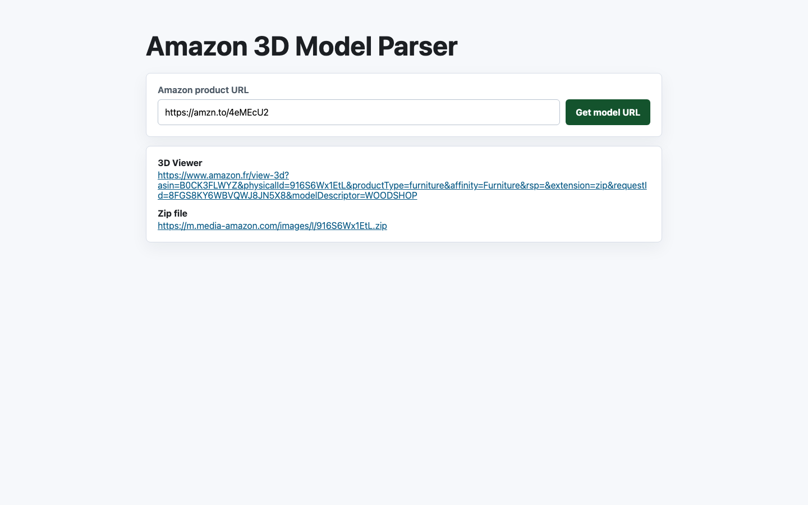
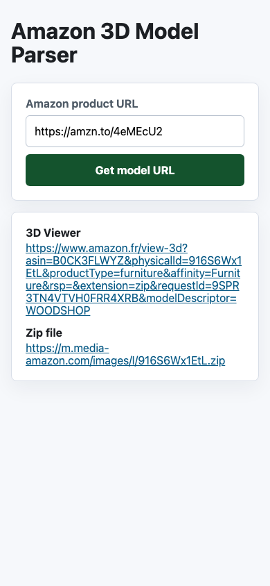

26-06-26 - Amazon 3D Model Parser
Contexte
Nettoyage et publication du parseur Amazon 3D. Nom public demandé: Amazon 3D Model Parser. Slug GitHub demandé: amazon-3d-model-parser.
Ce qui a été fait
- Découpage de la logique PHP en classes courtes dans
src/. - Validation URL Amazon centralisée dans
AmazonProductUrl. - Support des shortlinks
https://amzn.to/...avec validation de la destination finale Amazon. - Client cURL isolé dans
AmazonPageClient. - Parsing des liens
/view-3det génération URL zip dansModelLinkParser. - UI nettoyée dans
index.php, CSS externe dansassets/css/home-light.css. - Tests PHPUnit ajoutés.
- Test browserless Playwright ajouté dans
tools/browserless-test.js. - README mis à jour.
Pourquoi
Ancien fichier unique trop couplé. Séparation nécessaire pour tester la validation, le parsing et le rendu sans dépendre du réseau Amazon.
Tests
composer test: OK, 6 tests, 14 assertions.composer testaprès support shortlink: OK, 8 tests, 19 assertions.php -lsur tous fichiers PHP hors vendor: OK.npm run test:browserless: OK desktop + mobile.- URL testée:
https://www.amazon.fr/IDMarket-Meuble-Phoenix-avec-tiroirs/dp/B0CK3FLWYZ/... - Shortlink testé:
https://amzn.to/4eMEcU2 - Viewer trouvé:
https://www.amazon.fr/view-3d?asin=B0CK3FLWYZ&physicalId=916S6Wx1EtL&productType=furniture&affinity=Furniture&rsp=&extension=zip&modelDescriptor=WOODSHOP - Zip trouvé:
https://m.media-amazon.com/images/I/916S6Wx1EtL.zip
Captures


Fichiers concernés
index.phpsrc/AmazonProductUrl.phpsrc/AmazonPageClient.phpsrc/FetchResult.phpsrc/ModelLinkParser.phpassets/css/home-light.csstests/tools/browserless-test.jsREADME.md
Risques
- Amazon peut changer HTML, headers nécessaires ou bloquer requêtes serveur.
- Les shortlinks nécessitent deux requêtes: résolution, puis fetch de la page Amazon finale.
- Le
requestIddans URL viewer varie à chaque test. - Le fichier zip peut être inaccessible si Amazon invalide ou protège le modèle.
Axes de progression
- Ajouter cache court serveur pour limiter requêtes Amazon répétées.
- Ajouter téléchargement optionnel du zip avec validation taille/type.
- Ajouter extraction ASIN et normalisation URL produit avant requête.
- Ajouter rate limiting côté serveur.
- Ajouter CI GitHub Actions pour PHPUnit + browserless smoke test.